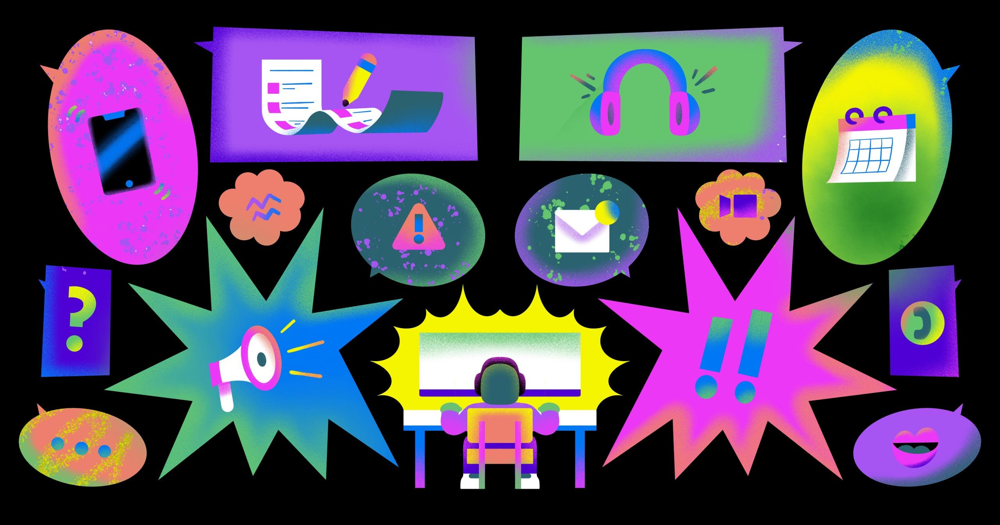
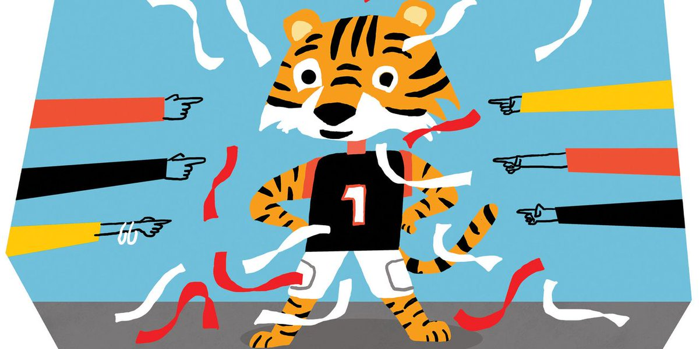
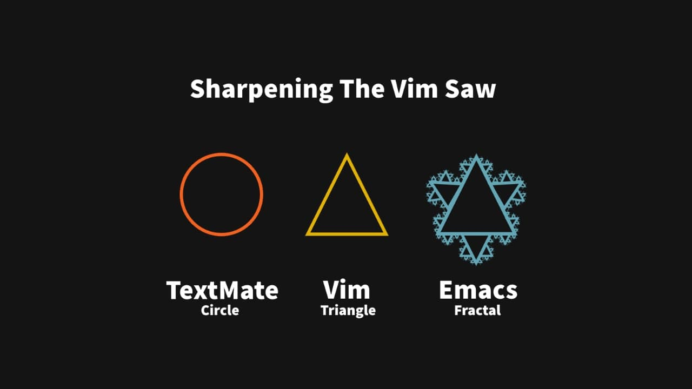

2023 年第一季度总结
这里记录下第一季度自己的一些想法，为了日后翻阅方便！
- 一月
- 思考人生的高度
- 大脑清洗术
- 学会独立思考
- 秘书问题
- 心理否认
- X-Y Problem
- 如何看待 ChatGPT 呢？
- 改写年终总结了
- 二月
- 怎么美梦成真
- 停止对理性的崇拜
- 我是如何进入软件行业的？
- 为什么下场都不好
- 用 OKR 进行个人目标管理的这一年
- 记录一下
- 必不可少的工作技巧和诀窍
- 三月
- 知识沉淀
- 什么是人权
- 随它去吧
- 英语学习指南
- 从一个重构项目中能学到什么东西
- 离婚中的男女不平等
- 战争杀戮的格式塔转换
一月
2022 年总结
年底了，关注的很多大 V 都写了自己的年度总结，在其中看到了 Tinyfool 也发了自己的新年总结。我看了之后，心里还是多少有些触痛。他说 2022 年的最后一天，自己的父亲白肺了，送进了 ICU 重症监护里面。
自己也遇到了一些事情，决定再一次，制定今年的计划。自己未来的目标就是提高收入，给家庭给家人更多保障，也给自己想做的事情提供更多的支撑。

一 思考人生的高度
应该用世界眼光看待问题，思考人生道路。
英国即将出台”名校签证”。世界顶尖大学的应届本科生，可以直接申请该签证，到英国找工作。
QS世界大学排名- 世界大学学术排名
- 泰晤士高等教育世界大学排名
名校的价值在这里体现出来了。相比普通大学， 名校最大的价值，不在于教育质量，而在于能为学生提供更多的机会。 北大清华的毕业生，未必强于其他学校，但一定拥有比其他学校更多的机会。
去年，北京 和 上海 都出台了政策，部分 985 高校的本科毕业生可以直接落户这两个城市。英国的”名校签证”简直就是这个政策的国际版。我的第二个感想是，就业的选择越来越广，以后的学生可以在全世界范围找工作。这意味着，学生应该用世界眼光看待问题，思考人生道路。
二 大脑清洗术
系统化思考、目的性更强、常常以第三人称视角看自己的思维过程
希望开始写日记的你，也能在忙碌的生活里找到一块净土。
- 为什么写 - 发现自己未知的想法
- 说清楚=想清楚
- 好记性不如烂笔头
- 写什么 - 大脑的清洗
- 当天发生的事情
- 以发生的事情为中心，产生的想法、心情
- 由产生的想法引发的一系列其他联想和问题
- 下一步行动
- 怎么写
- 写字还是打字
- 时间
- 时常准备一张白纸在边上
- 如何开始
三 学会独立思考
不管是素养还是判断能力，都是做水准的公民！- 链接
台湾一个老师，在自己的班级里面做了一个实验，就是分阶段的告诉自己三个班的学生关于：脱口秀主持人克里斯洛克在奧斯卡颁奖典礼上拿威尔史密斯老婆的光头来谈论，威尔史密斯不爽，上台打了克里斯洛克一巴掌，这件事情的不同信息，让班里的学生做出表决，是否支持或者不支持。
| 阶段 | 内容陈述 | 学生表决 |
|---|---|---|
| 1 | 只告诉经过和结尾 | 4 成支持 |
| 2 | 威尔史密斯老婆是因病掉髮 | 9 成支持 |
| 3 | 打人卻是更嚴重的暴力 | 4 成支持 |
| 4 | 威尔史密斯家庭的正面经历 | 8 成支持 |
| 5 | 打人事件带来的巨大灾难 | 5 成支持 |
最后统计了一下，三个班加起来，大约不到 1/4 的学生，从头到尾，你的态度完全没有动摇过，支持或反对威尔史密斯打人的态度，都没有改变。
最后，来时想告诉学生：他今天扮演的角色就像是政治任务或者媒体一样，蓄意喂养你片面的、我想要你知道的咨询，在这个过程中被他操弄了，因为我每次喂养的咨询不同，而产生立场反复的狀況！
明明政治人物应该考虑的是公益，媒体应该报道的是真相，但其若故意要操弄舆论，只给你其要你知道的咨询就好，对我不利的，一概不提。慢慢的，其就可以透过这种愚弄的手法，让民众变成对自己死忠而深信不疑且不自知，我要你膜拜你就膜拜，我要你打砸杀你就打砸杀，我要你铲除异己你就铲除异己，我要你上刀山下油锅，你还会爭先恐后想要身先士卒。而这样的现象，正在世界各地上演，令人担心。
任何议题与政策的提出，你都要学会独立思考，手机足夠的资讯，分析正反两方利弊得失之后，再决定你的立场。任何人跟你说的话，你都应该查明，而不是照单全收，人云亦云。父母、师长、媒体、政客，都可能有说错的时候。你要能做个成熟有判断力的人，不要成为人家玩弄的愚民。
四 秘书问题
前 37 个面试者无论多么优秀，都不会录取，他们只是用来确定录取的标准。- 链接
某公司招聘一名秘书，有 100 名候选人，依次面试。每面试完一个人，就必须立刻决定是否录取。也就是说，不能面试完所有人，再回过头决定录取哪一个，一旦放弃当前候选人，就只有从后面的面试者中选择。
如果录用得太早，可能错过后面更好的候选人；如果录用得太晚，可能错误放走前面的合格人选。这个设定是合理的，象征我们在生活中遇到的各种机会。机会来临时，转瞬即逝，必须立刻决定是否抓住它，错过就是错过了。你在三个月前放弃了一个机会，不可能三个月后再捡起来。
数学家对这个问题，已经有了充分的讨论。经过计算，成功概率最大的方法，叫做“1/e 法则”。e 是自然对数的底数，约等于 2.718，那么 1/e 就约等于 37%，所以它又称”37%法则”。
“37%法则”的意思就是，寻找阶段进行到 37%就要停止。100 个应聘者，先面试前 37 个，此后的面试只要遇到一个更优秀的，就立刻录取，不再继续面试了。换句话说，前 37 个面试者无论多么优秀，都不会录取，他们只是用来确定录取的标准。
如果最合适的候选者偏偏在前面 37%里面，那就只能错过了，作为”寻找阶段”不得不付出的成本。最终录取的将是不如前面候选人的次优选择。
这个法则很实用，日常生活中，只要符合”寻找-决策过程”的场景，都可以适用 37%法则。比如相亲、租房、读书、看剧、看视频、职业规划，等等都可以尝试下。
五 心理否认
置身事外|置身事外
一个狭窄的河谷建造了一座巨型水坝，有人对下游居民进行问卷调查，询问他们是否担心水坝倒塌。让人意外的是，住在水坝下游几英里的居民竟然是最担心水坝倒塌的人群，而住在水坝正下方的居民却一点都不担心。
这些居民每天一抬头就看到水坝，如果担心它会倒塌，从早到晚提心吊胆，那简直没办法过日子。保持镇定的惟一方法，就是从心底里否认水坝可能会倒塌这一事实。正下方的居民产生了”心理否认”。
这个名词原本用于个人心理学，现在也扩展到社会文化。如果有件事情让你深感痛苦，你可能就会潜意识地压制或否认这种感觉，以免引起痛苦，尽管这实际上可能带来灾难性的后果。
六 X-Y Problem
在一个根本错误的方向上浪费他人大量的时间和精力 - 链接
对于 X-Y Problem 的意思如下：
- 有人想解决问题 X
- 他觉得 Y 可能是解决 X 问题的方法
- 但是他不知道 Y 应该怎么做
- 于是他去问别人 Y 应该怎么做？
简而言之，没有去问怎么解决问题 X，而是去问解决方案 Y 应该怎么去实现和操作。于是乎：
- 热心的人们帮助并告诉这个人 Y 应该怎么搞，但是大家都觉得 Y 这个方案有点怪异。
- 在经过大量地讨论和浪费了大量的时间后，热心的人终于明白了原始的问题 X 是怎么一回事。
- 于是大家都发现，Y 根本就不是用来解决 X 的合适的方案。
七 如何看待 ChatGPT 呢？
要对技术有敏感度！
ChatGPT 不是基于事实，是基于语言模型的，事实对它来说并不重要，而是如何更加合理的回答你的问题。所以很多回答其实都不深，只能在表面上。
以发展的眼光来看问题，ChatGPT 这类的 AI 可以成为一个小助理，它的确可以干掉那些初级的脑力工作者，但是，还干不掉专业的人士。不过这也很棒了，因为大量普通的工作的确也很让人费时间和精力。
从另外一个角度来谈谈 ChatGPT，尤其是在 Youtube 上看完了微软的发布会才真正意识到 Google 的市值为什么会掉了 1000 亿美元，是因为 谷歌的搜索引擎的霸主位置受到了前所未有的挑战！一旦 ChatGPT 利用上了搜索引擎内容准确和靠谱的优势，那么 ChatGPT 的能力就完全被释放出来了，所以，带 ChatGPT 的搜索引擎，就是真正的“如虎添翼”！
八 改写年终总结了
明天晚上尽快写了吧，不然又不知道什么时候写了！
今年地球转得也太快了。听同事说，开始工作以后，地球转速加快是正常现象，结了婚和有孩子后还会有额外加成。考虑到地球转速问题，我想这份总结不宜再拖下去。
时代的一粒灰尘落在个人身上就是一座山，不幸的是：我们偏偏却活在一个尘土飞扬的年代。如果要对三年防疫做一句总结的话，我愿意称之为一场政治运动型的防疫闹剧。
2022 依旧是人类社会倒车和加速灭亡的一年。不过有幸的是，在经济下行压力、白纸运动抗议、国际共存舆论等众多因素的影响下，年末当权者终于叫停了这场政治运动型的防疫闹剧，底层的屁民韭菜们终于有了口喘气活下去的机会。回想起去年的现在，还被封在家里、还在抢菜、还在为明天吃什么发愁、还在担心这场荒诞至极的防疫闹剧什么时候能结束、还在担心这场闹剧的现实会一直持续下去。回想起那段时间唯独两天一次的支性检测不敢半点耽搁、老老实实做核酸、戴口罩、出示健康码、被训得服服帖帖，可谓是奴(zhi)性十足。
即便是去年六月初上海解封后，依旧没有从那种恐惧中解脱出来，反而变得越来越自闭，直到现在此刻的心态和上海封城那段时间没有太大区别。思想审查、文字狱、集中营、白色恐怖、谎言欺骗，这些并没有因为疫情结束而消失，每天的感触就像是在历史与现实的夹缝中苟活，对未来充满着无限的恐惧。
或许我们已经早已经听惯了你不关心政治政治会来关心你这句废话，但当经历了这场灾难（防疫闹剧）之后，我们或多或少地能感触到一个国家的政治气候的变化是如何深刻地影响和限制人类生存的状态和生存的可能。在某些性命攸关的时刻，政治它直接或间接地决定了我们还能不能在这个世界生存下去。
从去年上海封城到现在，在这一年多的时间里，博客已经很少再更新了，也慢慢地淡出了推特。除了正常的工作生活外，大部分时间和精力都是在研究和思考这个国家和社会为什么会上演着一场场荒诞至极的防疫闹剧。结合这三年防疫闹剧期间所发生、暴露出的一切，以及自己的生活感受，我越来越有一种想探究这场防疫闹剧的政治基础是如何一步步建立起来的想法。于是近期就整理了一些最近一年多的时间里所读的书以及一些个人的想法。
最近在读高华的《历史笔记》，感触最深的就是：六十年前大饥荒时基层干部对死亡人数谎报瞒报、中央政府拒不承认事实、新闻媒体跟着愚民洗脑。再看看我们所处的时代，从武汉肺炎谎报瞒报到西安的掩耳到“零”。六十年过去了，还是熟悉的味道。 所以我十分相信“对未来充满希望的人往往对历史一无所知”。—— Reimu
親身經歷了上海封城之後再讀楊繼繩的著作《墓碑：中國六十年代大饑荒紀實》，又一次對這個社會陷入了深深的絕望之中。 任何災難都可以被用來塑造成正確的集體記憶，然後成為政權合法性的組成部分。正是這種對民族記憶的大清洗和對罪惡的強制遺忘，遂使得相同的歷史悲劇一次次不斷地重演。—— Reimu
以下是我个人推荐的历史书籍。在经历了三年的防疫闹剧之后，结合自己的切身经历再次阅读这些历史书籍，就会有种亲临历史的错觉，仿佛活在历史与现实的夹缝之中。这些历史事件并不遥远，就像昨天一样清晰地铭刻在我们的脑海中。
| 作者 | 书名 |
|---|---|
| 徐贲 | 人以什么理由来记忆 |
| 周雪光 | 中国国家治理的制度逻辑：一个组织学研究 |
| 谢岳 | 维稳的政治逻辑 |
| 笑蜀 | 历史的先声：半个世纪前的承诺 |
| 赵紫阳 | 改革历程 |
| 徐中约 | 中国近代史 |
| 高华 | 身份和差异：1949－1965 年中国社会的政治分层 |
| 高华 | 在历史的风陵渡口 |
| 高华 | 历史笔记 |
| 杨继绳 | 天地翻覆：中国文化大革命史 |
| 杨继绳 | 中国改革年代的政治斗争 |
| 杨继绳 | 中国当代社会阶层分析 |
| 杨继绳 | 墓碑: 中国六十年代大饥荒纪实 |
| 橙实 山川 等 | 文革笑料集 |
| 【美】傅高义 | 邓小平时代 |
| 【美】亨利·基辛格 | 世界秩序 |
| 【美】亨利·基辛格 | 论中国 |
| 【英】乔治·奥威尔 | 1984 |
| 【美】孔飞力 | 叫魂：1768 年中国妖术大恐慌 |
| 【美】芭芭拉·德米克 | 我们最幸福：北韩人民的真实生活 |
| 【捷克】哈维尔 | 哈维尔文集 |
| 【捷克】伊凡·克里玛 | 布拉格精神 |
| 【白俄】S·A·阿列克谢耶维奇 | 切尔诺贝利的悲鸣 |
二月
不过，一日膜法，终身膜法！
人不是活一辈子，不是活几年几月几天，而是活几个瞬间。致敬每一个扛住了生活的平凡人。

一 怎么美梦成真
Best Future Self
我们常常做多很多短期规划，比如这几天看完这本书、这三周学习一本新语言的基本特性等等，而忽略了长期规划的重要性。如果你从现在开始做的选择都是正确的，十年之后成功的自己会是怎样的？因为当有了信念，我们就会朝着那个方向去。
- 三年
- 五年
- 十年
- 三十年
给出的愿景越具体越好，最好是一个具体的场景，尽量多地提供细节。开始想象五年、十年、三十年后的自己是怎样的。越详细越好，并且尽量大胆想象，因为好的自己 = 现状 + 未来每一个正确的选择
- 五年之后，我站在某个欧洲城市的街角，心情很平静。手里拿着一杯咖啡，正在等着朋友。那天是周末，结束了工作日的工作。
- 我在当地公司的内部咨询部门工作，虽然工作很忙，但是不加班。我的朋友来了之后，我们会讨论一些形而上的内容。
它能够起到积极的自我调节，帮助你明确人生框架，从而产出行动方案，同时帮助当下的你提升幸福感。
- 自我了解与调节 - (重构自己的优先级)
- 提供了一个探索自我、了解自我的机会
- 了解内心深处，最重要的是什么？
- 什么样的情绪是自己的最佳情绪？
- 推动我行动的动机是什么？
- 提供目标框架并提高掌控感 - (泽清著重要的渴望)
- 自己想实现的目标分类、按照优先级排列
- 最先蹦出来的，可能是最重要的
- 具象化自己的目标，隐藏在潜意识深处的渴望
- 提升幸福感 - (积极去做)
- 产生正面乐观的思考，从而提升自己的表现
- 现实还是没有改变，但是你的内心改变了
想象完毕之后，就需要明白自己和未来自己的差距，然后制定行动计划，把行动方案融入每天的日程，并且时常回顾。
二 停止对理性的崇拜
无知和弱小不是生存的最大障碍，傲慢才是。
很多时候我们在写文章和其他人讨论的时候，为了更有说服力，往往都会引用很多理论数据来佐证我们的观点，但是我们有没有相关自己在挑选数据，最后会导致并非是我们想要的。
- 为什么人们总是坚持「我对你错」呢？
人的道德判断是直觉式的，是一种感性的情感反应，并非来自于思考和理性的计算。我们自以为的推理，并不是为了探求真理，而是为了找理由支持我们的直觉的情感反应。—— 心理学家乔纳森·海特的《正义之心》
我们都是在第一时间就得到了结论。之后，我们用搜索引擎查文章、找数据，静下心来思考，其实都不过是在根据这个结论寻找合适的理由。—— 心理学家乔纳森·海特的《正义之心》
- 人脑中有六个最基本的道德模块
- 关爱 / 伤害
- 公平 / 欺骗
- 忠诚 / 背叛
- 权威 / 颠覆
- 圣洁 / 堕落
- 自由 / 压迫
每个人的成长环境和经历，决定了这些模块的权重（占比）并不一致，这也导致，当面对同一件事时，不同的道德模块会对我们有不同的指引，每个人的直觉反应就完全不一样。面对疫情，两个「道德模块」相差很大的人下意识地做出了不同的道德判断，进而，找到理由来说服自己，以及说服他人。
人们不是在选择事物本身，而是在选择对此事物的描述。这也意味着，人们做何种选择，取决于这种选择以何种形式被呈现出来。背后的原因是，这些呈现的形式，会直接触发不同的道德模块。
当你读到那些文字的瞬间，你的道德模块就快速做出了反应，进行了道德判断。之后的推理、依据、争论，不过是这个判断的自行合理化而已。
- 我们应该停止对理性的崇拜
如果你真的想改变其他人关于道德或政治问题的观念，你就得从他们的视角看待问题。当你对别人心存感激时，就会容易接受他们的观念。 任何珍视真理的人，都应该停止对理性的崇拜，我们远没有我们想象的那么理性和客观。大多数时候，我们都是根据自己的道德模块矩阵做出直觉的判断，所谓的理性不过是自欺欺人。
三 我是如何进入软件行业的？
这是我第一次看到软件可以减少人类的苦难！
小时候，我的父母是保险经纪人，我也帮着家里干一些活。保险公司有很多纸质文件，需要整理、复制、归档，非常耗费人工和时间。
其中，最麻烦的一件事，就是给客户发送续约提醒信函。每个月都有很多客户的合约到期，我们必须在到期前，给他们发送提醒信函和保单，以便客户续费或联系我们。
后来，我看到文档编辑软件有宏功能，意识到我可以写一个宏，自动化整个过程。只要把客户的保单号码、到期日期和地址输入数据库，我可以提取下个月将要到期的客户，将他们的数据与文档模板合并，生成所有信件，根本不需要任何痛苦的复制和粘贴。
我们用了一年时间，陆陆续续将每个月到期的客户信息输入数据库，最终完成了这个简单的程序。打印这些续费信件从每月好几天的烦人工作，变成了一个自动执行 10 分钟的任务。
从此，”减少人类苦难”，对我来说就是软件价值的核心。我从这个小程序开始，在软件行业已经度过了几十年，我过去和现在所做的工作都以此为目标。
四 为什么下场都不好
读史可以明鉴
- 中国古代巨富的一些共性问题
那我们就看到中国古代巨富的一些共性问题，他们的财富来源都和权力有紧密的关系，在权力斗争中就容易成为牺牲品。
现在有个说法叫白手套，其实分成很多种，有一种白手套是完全的白手套，就是他所掌握的财产全部是官员的，他纯粹是代持。还有一种，他是跟官员有非常深的勾结，就像胡雪岩这种，但他其实有大量的财产是他自己的。中间可能有一部分是替左宗棠代持的，或者左宗棠有一定比例的粉红，和定期的孝敬。
现代的官员和这帮有钱人的白手套关系，其实也是这两种。有一些商人看着生意很大的，但其实纯粹是代理人。有一些他不是纯粹的代理人，他有他自己的一些想法和财富，但是他跟一些官员有紧密的联系。
- 为什么中国的顶级富豪移民的不多
古代巨富都有一个共性，它的财富都来源于权力，在权力斗争中容易成为牺牲品。那么为什么中国的顶级富豪移民的不多。
- 总结
首先就是说在中国的古代历史上，或者在中国的传统的政治体制下，权力是唯一的，是最重要的，整个的经济都受制于权力，私有财产没有那么重要，基本上也就是权利让你富你就能富，权利不让你富就不能富。
所以中国一有风吹草动，有些富豪就出去躲两天，一春暖花开就又回来。所以中国顶级富豪移民其实没有想象的那么多。
五 用 OKR 进行个人目标管理的这一年
OKR 工作法：谷歌、领英等顶级公司的高绩效秘籍
《OKR 工作法》一书中定义：O 表示目标(Objective)，KR 表示关键结果(Key Results)。目标就是你想做什么事情（比如，上线一款游戏），关键结果就是如何确认你做到了这件事（比如，一天 2.5 万下载量或一天 5 万美元收入）。按照年度、季度设置 OKR 都可以，但一定要关联上自己的愿景。
职业发展
- O1 确定以后深耕的技术方向，稳定输出技术文章
- KR1.1 转岗到 Go 后端
- 复习 Go 语法
- 学习 Kratos 框架并输出学习笔记
- 参与开发公司至少两个 Go 后端的项目
- KR1.2 公司内部每月输出一篇技术分享文档
- 3 月：《重构（第 2 版）》1-5 章
- 4 月：《Go 语言编程之旅》第 2 章
个人成长
- O2：持续输入，保持输出
- KR2.1 每月阅读至少一本书
- KR2.2 每月写至少一篇文章
自我实现
- O3：人们会被自己热爱的事物改变
- KR3.1 培养音乐素养
- 学完《乔伊重金属节奏》第一册
- 能完整弹至少五首自己喜欢的歌曲，保证不出错，并录制视频
- 寻找志同道合热爱相同音乐风格的朋友组乐队
- 通过演出经纪人资格考试
- 整理+听完乐队数据库信息（后摇、后朋、金属）
- KR3.2 精进摄影
- 学完《一本摄影书》
- 复习「Thomas 摄影笔记」
- 整理 2022 年的摄影作品发布
- KR3.3 学会至少八道拿手菜
- 学会至少八道拿手菜
- 邀请至少两波朋友来家里做客，品尝自己做的菜
个人健康
- O4：养成良好的生活习惯
- KR4.1 早餐完成率 ≥75%，每周至少有五天吃早饭
- KR4.2 按时入睡达成率 ≥60%，每周睡够 40 个睡眠周期，每天睡 8 小时
- KR4.3 健身记录圆环闭合率 ≥80%
自我整理
- O5：定期「断舍离」
- KR5.1 家中物品断舍离
- KR5.2 照片断舍离
- KR5.3 硬盘备份断舍离
娱乐休闲
- O6：劳逸结合，热爱生活
- KR6.1 每月至少观看两部四星及以上的电影
- KR6.2 每季度至少旅行一次
- KR6.3 每月北京美食探店至少四家
定期复盘，至少一季度做一次复盘，有时候每个月末也会看看 OKR 执行的进度，看看是否需要调整。
2022 年对于我来说并不是一个喜欢的年份，经历了五次封控，看到了许多新闻，思考了未来。谁也想不到最后的十二月会来这么一个 180 度掉头。但随后发生的事情又一次让我看到了黑暗，自己也在 2023 年初感染了新冠，现在还没有阳康。
但我是我，我不会因为过去的一年不好就放弃热爱生活，我是为自己而活。迟到的新年快乐 & 提前的春节快乐！
六 记录一下
Stay Simple, Stay Naive!
- 是否需要买一个 appletv
请问 Apple TV 播放 NAS 内视频方便吗？如果是蓝光圆盘可以顺利播放吗？
我自己的方案是 Emby + Infuse Pro 的方案，目前用下来对于常见编码都很好。至于蓝光原盘的话，需要 Infuse Pro 直接读 SMB 挂载的盘，目前体验（包括菜单，也都还不错
- 手机软件大于网页应用大于电脑软件
今天程序员都要再重新思考，为什么计算机没有占领这个世界。计算机的保有量和手机的保有量是完全不可比拟的。在中国比如可能有一亿台电脑，但是可能有十几亿台手机。手机是人手一个的，电脑可能是十分之一的人才会有的东西。
- 引发我的一个思考
这就是第一个问题：年纪大了，你的精力其实没年轻人那么好。 我跟我年轻时代最大的区别，就是我年轻的时候，其实也不知道在写什么代码，也不知道写的代码能不能挣钱，但是有无穷无尽的精力。
我不可能像那么有精力，但又有很多事要干：我得写公众号，我得做视频，我还得写代码。这三样任何一样，干好的人都不多，但是我三样都想干好他，所以我有很多事。
第二个点就是这个时代，我觉得变化非常之大。不要全部亲力亲为，多用开源组件，因为这是一个开源时代。
我们这种老程序员却有一个执念，感觉大量的用开源的现成的东西不够酷。如果真的要用一个开源库，我能不能给他调整下性能，优化一下，让它速度变快 10 倍，这样我们才会觉得我们在做事情。
- 聚焦小问题，控制问题空间不要膨胀
- 一些现在做独立开发的年轻人，聚焦在某一个小问题上（优点）
- 如何应对 AI 和开源时代，做好独立开发者
- 尽量减少开发量，运用开源的东西，
AI技术以及胶水代码，可以提高战斗力和执行能力 - 不是不能接外包，而是做外包的事情太浪费时间了，中间最大的问题都在沟通成本上
- 如果高效的做外包，一是要有稳定的业务来源，二是我认为做外包，且必须得是非常专业化
- 尽量减少开发量，运用开源的东西，
七 必不可少的工作技巧和诀窍
Everything is a trade-off! - 链接
刚刚入职那几天确实令人害怕。 我现在依然可以清晰举出很多例子，例如在第一天上班前的晚上无法入睡，因为不知道第二天将要发生什么而内心崩溃。对于大多数人来说，开始一份新工作就像踏入未知领域。即使你已是行业的资深人士，不可否认的是，你内心可能还是会对即将发生的事情感到有点害怕。
在拥有了三年全职软件工程师的经验（以及之前的几次实习）之后，我将这段时间的经历进行了复盘，并整理出一份我自己在适应新技术职位时使用过的技巧和诀窍清单。我想不只局限于前面的几个月，而是优先考虑如何让这段经历帮助你实现长期的成功。
- 反思现有的流程和文档
大多数新员工一开始要么拥有一大堆文档，要么根本没有。你可以将这视为一个机会，而不是被这两种可能性中的任何一种所淹没。从现有文档中找到缺口，并想想你可以怎样为下一位入职的工程师做出这方面的改进。这不仅能显示你工作的主动性，还表明你致力于改进团队中的现有流程。
上述两种极端情况我都遇到过。我在没有任何文档的团队中工作过，也在一些更新文档方面很勤快的团队中工作过。对于前者，你的路径非常简单直接，你可以致力于创建那些缺失的文档。对于后者，你总是可以想办法改进已有的东西。有时，过多的书面文件也会让人感到害怕，尤其是对新员工而言。有些事情可能通过其他媒介进行更好地解释，比如视频教程或截屏。
- 勤问问题
我会建议你在开始一份新工作时研究一下公司是否会为你分配搭档。工作搭档的主要作用是在你入职时为你提供帮助。我发现这非常有用，因为这个人能够针对你所有的问题给出指导，你就不必为了寻找合适的人或部门而四处奔波。
- 做好调查
- 这包括进行网络搜索、查看论坛和阅读现有文档。使用所有可用的工具。然而，给自己设定时间规划是很重要的。你必须平衡好尽职调查与牢记手头项目截止日期和可交付成果。
- 说出来
- 作为母语不是英语的人，我建议你在提问之前大声把想法说出来。根据我的经验，我经常发现自己会用一种语言（通常是我的母语）思考但不得不用另一种语言来解释，而当我在一些困难的问题中挣扎时这一现象尤为突出。有时这颇有挑战性，因为经过翻译后的想法可能没那么容易理解。
- 组织思绪
- 当你在为某件事而苦苦挣扎时，可能同时有很多不同的想法在你的脑海中翻来覆去。这些想法可能对你来说都挺有道理的，但对于别人来说却不一定说得通。对此，我建议你坐下来，收集你的想法，写下来，然后大声说出来。这一做法可确保当你在解释自己的思维过程时，你能按照预期进行流畅地表达出来，听众也可以紧跟你的思路。
这种方法称为橡皮鸭调试法，是开发人员在调试时的常见做法。背后的概念是，有时向第三方解释你的问题非常有助于你找到解决方案，同时也证明了你出色的沟通技巧。
尊重别人的时间。即使你在向你的搭档求助时，也要意识到他们也有自己的日常任务要完成。 我尝试过的一些事情包括：
- 写下我的问题，然后留出一些时间与我的导师交流，以便与他们交谈。
- 整理问题而不是反复寻求帮助，这样导师可以在他们有空的时候着手解决。
- 安排
15-20分钟的快速视频聊天，特别是如果你想共享屏幕，这一方法可以很好地展示你的发现。
我认为这些方法是更好的选择，因为这么做你能得到对方全部的关注，而不是在他们忙着其他事情的时候每隔几分钟打扰他们一下。
- 深入研究你的项目
即使在拥有出色文档的团队中，开始你的技术项目也可能非常艰巨，因为一个项目涉及多个部分。不过，随着时间的推移，你将了解团队是如何做事的。但是，通过记下一张实用清单，这包括基本项目设置、测试要求、审查和部署流程、任务跟踪和文档，你将迅速搞清楚一切，节省了你的时间和潜在的麻烦。
如果你开始的项目没有文档（我就遇到过这种情况），请看看你能不能找到当前或以前的项目所有者并了解基本的项目结构，这包括设置、部署等。
- 确定你的团队在 IDE（集成开发环境）中的偏好。你可以自由使用你喜欢的 IDE，但使用和团队相同的 IDE 会比较好，尤其是在调试的时候，因为 IDE 的选择会影响调试。不同的 IDE 提供不同程度的调试支持。
- 了解如何进行调试。我的意思不仅仅是使用打印语句（不是说这种方法有什么问题）。充分利用团队的经验！
- 了解测试要求。这可能取决于项目的范围和团队的一般惯例，越早弄清楚要求，你在后期推送自己的修改请求时就会越有信心。
- 可视化部署过程。这个过程可能因团队、公司等而异。无论这个过程是非正式或正式，请确保你了解自己提交的新代码是如何被部署至新环境中、部署流水线是什么样的、如何安全地部署代码更改、在构建失败后可以怎么做，如何回滚错误的更改，以及如何在生产环境中测试你的更改。
- 了解工单流程。了解如何记录工单以及要求的详细程度。你会由此发现每个公司各不相同。有的公司希望我们每天提交工单以显示我们的进度。有的公司可能不需要如此详细。
基于我刚才提到的所有内容，我建议你可以在入职头几周内做一个有益的、一体化的练习——跟随模仿另一位工程师并进行结对编码。这么做让你可以端到端地观察整个流程，从派单给工程师到部署到生产中都清清楚楚。
如果刚入职几周时你还没有机会亲身实践，可能你会感到沮丧。为了解决这个问题，你可以让你的经理也给你派一些初级的单子。这些通常是一些小任务，例如代码清理或添加单元测试。不过，它们允许你修补代码库，这有助于提高你的理解并给你带来成就感，这在新工作的初期是非常鼓舞人心的。
- 当你遇到困难时尤其要大声说出来
我想强调一下当你碰到困难时沟通的重要性。遇到困难总是难免的，尤其是在一份新工作的最初几个月，尽管这可能会令人沮丧，但这正是你的沟通技巧大放异彩的地方。
让工作中的阻碍和进步透明化。即使是像权限问题一样的小事（新员工常常遇到的障碍之一），也要确保你的经理知道。
如果有些工作耽搁了，不要等到最后一天才向团队报告。你的项目延迟会推动许多其他事情的发展。对于一些必要的项目延迟请提前告知，以便你的经理可以与相关人员分享这一信息。
不要因为匆忙而忘记全面测试代码的更改或为你的代码的写文档等事情。
获得技术大局观
获得技术大局观是我个人一直在努力改进的地方，并且我一直在积极改变自己对此的看法。
当年我开始实习时，我会非常专注于自己想学的东西。我会非常专注于我的项目，但对其他一切完全视而不见。多年后，我意识到对其他或相邻的项目视而不见可能不是最明智的。
首先，技术大局观会影响你对自身工作的理解。我曾经天真地以为，只要我专注于自己的项目就可以成为一名优秀的工程师。但事情并非如此。你应该花时间了解其他可能与你的项目有所交互的服务。你无需深入了解细节，但建立基本的理解也会大有帮助。
新员工的一个普遍经历是与公司其他人脱节，会有这种感觉很正常，尤其是在大公司。我是一个很快就会产生排斥感的人，所以当我刚到 Yelp 时 —— 这是一家比我以前的公司大得多的公司，项目规模也大得多，我优先考虑了解大局。我不仅努力建立对我的项目的理解，还认真了解了其他相邻项目。
在 Yelp 的头几周，我与团队中的其他各位工程师坐下来，请他们给我一个关于我将要做什么和项目的总体目标的概况。这种方法非常有用，因为我不仅根据工程师的资历和他们在项目上的工作时间得到了不同程度的解释，而且还加深了我对我将要从事的工作的理解。我参加这些会议的目的，是希望我对项目掌握的认识让我能够向街上的陌生人解释我所做的事。为此，我还请我的技术主管向我解释，当用户打开 Yelp 应用程序并搜索内容时，我的工作成果会在什么时候出现。
在这种情况下架构图也很有用，尤其是它能帮助你了解不同服务是如何交互的。
- 建立期望
在过去很长一段时间里，我以为自己只需要尽力而为，成为一名优秀的员工就行。只要我有在工作，达成目标，而且没有人投诉，那就足够好了，对吧？错！
你必须对你的职业有战略眼光。你不能只是将它外包给人们的一片好心，并希望自己只要达成了目标就能得到想要的结果。
- 在你开始新工作的那一刻就建立明确的标准。这因公司而异，因为有些组织有非常明确的措施，而其他组织可能几乎没有。如果是后者，我建议你在头几周内找你的经理坐下来谈谈，制定并统一一个标准。
- 确保你彻底了解公司将如何评估你以及采用什么方法进行评估。
我记得在我的第一份全职工作中，我对自己的第一次评估谈话一头雾水。整个谈话非常含糊不清，而且我对自己的长处、短处甚至可以如何改进都一无所知。
起初，我很容易地将一切都归咎于我的经理，因为作为新员工的我认为这是他们的工作，而不是我的职责。但随着时间的推移，我意识到，就我的绩效评估而言，我不能只是袖手旁观。你不能只做好工作并期望它就足够了。你必须积极参与到这些对话中。你必须确保你的努力和贡献被注意到。为了确保你的工作得到认可，你可以做很多事情，从定期参与技术设计对话到设置团建活动。
与建立期望相联系的还有积极寻求反馈的重要性。不要等到每三、四个月进行一次正式的绩效评估时才知道自己的表现如何。积极与你的经理建立反馈循环。虽然这听起来很可怕，但尝试定期进行寻求反馈的谈话。
- 在分布式团队中找到方向
在过去两年中我们的工作场所在不断变化，如今在远程和分布式团队中工作已成为常态，不再罕见。我列出了一些技巧，帮助你在分布式团队中快速找到工作方向：
建立核心时间并将其设置在你的日历上。核心时间是你的团队一致同意的几个小时，在这段时间里，大家都明白自己应该在线并能随时响应。这样做很方便，因为会议只会安排在这个时间段，让你在计划自己一天的工作时更轻松。
注意人们的时区和午餐时间。
在虚拟世界中，你需要付出更大的努力来维持社交互动，而小小的心意却可以大大有助于让工作环境更加友好。其中包括：
开始会议时，互相寒暄并询问人们周末/一天过得如何。这有助于打破僵局，让你能够与团队成员建立更私人的、超越工作的联系。
建议定期举行非正式的虚拟聚会，与团队进行一些随意的闲聊。
维持工作生活间的平衡
在你职业生涯刚开始的时候，你很容易认为只要投入很多时间就能成功，特别是考虑到我们全天候待命的“忙碌文化”，以及认为建立生活工作的平衡是在职业生涯下阶段才需要考虑的想法。但这些想法与事实相去甚远，因为工作与生活的平衡不会神奇地发生在你身上。你需要积极和非常勤奋地去找到个人的平衡点。
没有工作与生活平衡的可怕之处在于它是慢慢蔓延到你身上的。刚开始是你下班后还在查看电子邮件，然后慢慢地，你开始周末也在工作，一直感到疲惫不堪。
我列出了一些提示，可以帮助你避免这种情况：
关闭/暂停通知和电子邮件并将自己设置为离线。
不要在周末工作。刚开始是你需要在这一个周末工作，但不知不觉间，你会发现自己大部分周末都在工作。不管是什么工作，它可以等到星期一。
如果你是待命的工程师，请了解公司的相关政策。一些公司提供金钱补偿，而另一些公司可能会以休假代替。利用这个时间。不使用 PTO（带薪休假）和健康日等福利确实会缩短你的工作寿命。
总结
毫无疑问，开始一份新工作压力很大而且很困难。我希望这些方法和技巧会让你的头几个月变得更轻松，并为你在新职位上取得巨大成功做好准备。记住，勤沟通，确立职业目标，积极主动，有效地使用公司的工具。做到这些，我相信你会做得很好！
三月
感慨他们那一代人。
我有时候感慨他们那一代人，年轻的时候，整个国家非常贫困，家庭非常贫困，我们家族又在农村，啥也没享受到。壮年了工作都很辛苦，也是一辈子兢兢业业才熬到退休。
期待他能度过这一次劫难。至少再多活 20 年，有他在我们就是一个完整的家。

一 知识沉淀
论系统化学习的重要性 - 链接
程序员要想做点副业，千万不要做外包项目，更不要做那些不入流的事，一定要做那种有积累有沉淀的东西，无论是写代码，做咨询，还是做写文章等，一定一定要系统化！你每天都在为你的城堡加一块砖，只有这样才能成为资产。另外，强烈建议工匠的方式做事，因为只有这样，“基础”和“副产品”才会变得可观……
- 软件方面
我非常建议做多人协作的订阅制产品，因为用户的沉默成本更大。同时，我也非常推荐能够在某成功建康商化业的 PaaS/SaaS 的 Marketplace 生态里做 add-ons 或增强，这就是所谓的“小而美”的事，另外，最好能做全球化英文版的，因为，开放和自由从来都是商业化的温床，通过开源或社区建团队最佳……
- 个人方面
要学会放大自己的价值，高级人才在 35 岁后的价值不在大公司里，而是中小型在高速成长求贤若可的公司，看看这些后浪公司要解决什么样的问题，再观察一下前浪的关键技术，你就知道你要什么样的技能了……然后，你要思考的是低成本性价比高的解决方案，大多时候，低成本方案会成为最终的胜者……
二 什么是人权
需要理解人权的本质到底是什么 - 转载
每隔一段时间，我们都能看到官方谴责美国“又挥舞人权大棒、打人杈牌”，给中国施压，那么人权这个概念应该怎么理解？如果对比中国和美国关于人权的报告，可以看出，两个国家在什么是人权这个问题上的分歧是很大的。
举个例子，在 2018 年中国向联合国提交的 《国家人权报告》里，很大的篇幅都用来陈述中国的经济增长，比如列举了中国的国内生产总值，人均支配收入，脱贫人数，还列举了就业率、儿童入学率、犯罪率等等。在讲到言论以及新闻自由时，该报告列举了中国互联网普及率，有多少种报纸和期刊，广播电
视覆盖率有多么高，等等。
这些数据或许是对的，但和人权这个概念没有直接的关系，不如说回避了人权的本质。美国出的报告并没有否定中国的发展，因为人权的概念主要针对的是公民在言论、迁徙、出版、集会等方面不受政府的侵犯，更多地是针对公权力扩张而言的，不是说任何社会问题都叫人权问题，也不是说经济发达，生活条件更好，人权状况就必定更好，例如恩格斯就曾说过：“奴隶能够比无产者生活得好些，但无产者属于更高的社会发展阶段。”就是说在恩格斯那个年代，奴隶的生存条件是有可能比一个自由人更好的。
有人考证，当年美国的奴隶主也不都是对奴隶为所欲为的，有些奴隶也是有奖金和休假的，然而奴隶并不被承认为一个人，一个市民，而只是主人的一份财产奴隶之所以为奴隶，并不在于，或首先不在于他生活条件的恶劣，而在于他不被看作是具有独立意志，可以为自己说话的人。这里有一个文化上的巨大区别，西方人认为人权有根本性的价值，人权本身就是目的，是与生存权一样不可放弃的，甚至是高于生存的。
中国人通常认为人权只有工具性的价值，像 freedom of speech 等等只有在有利于国家和经济发展的情况下才是值得追求的，比如中国古代的大臣经常劝皇帝要“广开言路”，这样才能江山永固，这就是一种工具性的价值，它本身不是目的，如果在生存和人权中选一个，那大部分人多半会毫不犹豫地选择前者。有人会说，如果我从主人那里独立出来，没有主人管的话自己饿死了怎么办？那只能说这是有可能的，相比被庇护，独立并不必然带来显而易见的好处，甚至带来更多的麻烦和不方便，但这也是你自己选择的。
因此，尊重人权的国家并不一定在所有方面都更好，比如某些国家的快递员动不动就嫌工资低，工作环境差，不想干了，这时候雇主就会和代表谈判，最后妥协出一个双方都满意的标准，但这就会导致物流效率比较低，而另一些国家的劳动者被人为剥夺了提要求的权利，你不干有的是人干，这就会显得效率很高。
因此，拿某项经济指标很高来证明有人权，或是拿某项经济指标低来证明没人权，都是没搞明白本质。人权理论认为，一个社会尽管存在问题需要解决，但旦诉诸公权力扩张那就应该慎之又慎，必须论证这是必要的，且必须选择侵犯最小的。人权理论中的比例原则就强调，为了保障人权，国家所采取的措施必须有助于达成目的，且所采取的措施必须是损害最小的(最小侵害原则)，否则就可能是违宪的。什么意思呢？就是说你不能用高射炮打蚊子，不能为了提高钢产量，直接把铁锅铁器都拿去熔化了，不能为了治某个病，让别的病都没法治。
鉴于人权是一个西方词汇，在这方面和人比拼有天然的劣势，我认为以后中国可以用和谐、盛世、小康这些标准来给各个国家打分，这就有主场优势了，因为这些词都是中国特色的词汇，对这个词的解释权在自己手里，别人批评你人权，你还可以批评别人不够和谐，不符合我们对盛世的标准，让其他国家都争着证明自己是盛世，这才叫文化自信。
三 随它去吧
将能改变的事情做到最好！
不少网友私信，问我在上海的近况。我都没有回复，总觉得隔离的生活没什么可说。小区封控一个月了，出不去，下楼就是做核酸和领物资。这些事情不值得细说。
我认为，对待这些事情的正确态度，就是三个字：随它去，英语叫做 let it be。不要为这些事情费神上心，理由很简单，它们完全超出了你的能力，你根本影响不了，无论事情发展到哪一步，你只能接受。就算你感到痛苦和烦恼，难道会改变局面吗？
我们的时间很宝贵，不要用于那些改变不了的事情，而要用于你能够改变的事情。一位美国神学家曾经写过一段著名的祈祷文：”请赐予我力量，全力改变那些可以改变的事情，平静接受那些无能为力的事情，拥有智慧区分这两者。“
疫情何时结束，小区何时解封，这是你无能为力的。与其烦恼这种事情，不如不去管它。人生难得有这样一段突然停下来的时间，别浪费了，多读一点书，多学一点技术，比什么都有用，等到生活恢复正常，它们能帮到你。
疫情是一场灾难，但是如果能好好利用这段日子，它也许就会变成你的人生财富。
裁员也应该如此看待，这一次有些行业（房地产、教培、互联网）的裁员，属于全行业收缩，不是员工的问题，行业的问题超出了你个人的努力。
如果公司把整个部门和业务线都砍了，里面最好的员工也不可避免会受到影响。不要灰心焦虑，更不要怀疑自己，既然事情已经发生了，你所能做的就是随它去，别把时间用来长吁短叹、愤世嫉俗，而要保持学习，磨练自己的技术，等到行业回暖时，就会有回报。
你要这么想，这些行业之所以会收缩，就是因为前期的市场需求旺盛，扩张太快。这说明它们的市场需求是真实存在的，只要市场需求还在，就有发展空间，你练好本领，不愁将来没有用武之地。
四 英语学习指南
专为程序员编写的英语学习指南 - 链接
在英语学习过程中，要注意查看符合自己水平的经验和教程，否则可能会走弯路。你越早明白语言学习没有技巧，就会越少浪费时间和金钱在各种资料和经验上面，走越少的弯路。
语言学习的本质浅析
语言的本质功能是人与人或物体之间的意识、知识的交换，即便你不懂语言，也可以交换意见，只是掌握语言之后，你可以更精准、更快、更容易的交流、交换、表达。
- 语言本质
- 脑子好使但语言表达不行，在别人看来等于脑子不行
- 语言受限于表达能力，对意识、知识的传递是有损的，尤其是翻译
- 推导而出
- 语言的学习，是学习双方都能理解的表达方式和表达思维
apple对于你是苹果，对于对方也是苹果- 英文的思维习惯是从细节到具体，而中文思维习惯是从大到小
- 语言的表达不能通过转换为自己熟悉的语言再转换
- 一是信息有损
- 二是思考的过程太慢影响交流的时效性
- 语言的学习，是学习双方都能理解的表达方式和表达思维
构建一个识别英语的程序
语言交流是听说读写，其中包含两个识别器（听力识别器和视力识别器），一个核心理解器，两个表达器（口语表达器和书写表达器）。
听力识别器
- 听力能力
- 说明：要求可以输入声音并转换成一种可分析的信号
- 训练：买个好麦克风，对应人类是保护好耳朵和听力
- 口音识别器
- 说明：各类方言比如粤语，各种口音比如东北口音、英式发音和美式发音
- 语言特性识别器
- 说明：语言之间有特性，比如中文没有略读，而英文会为了说话省劲而略读或连读
- 训练：扩充特殊语言引擎的匹配规则，扩充语料库
- 音量调节和杂音处理器
- 说明：可以通过算法过滤无用杂音，并将小音量调大使其清晰
- 语气、性别、身份、语速识别器
- 说明：人类天然进化出这种能力，无需特殊训练
- 上下文缓存器
- 说明：交流过程要有上下文内容缓存，结合输入理解器
- 听力能力
视力识别器
- 视力能力
- 图形识别器
- 说明：不同字体、变形都可以识别出来具体字符
- 训练：识别能力、精准度和速度
- 上下文缓存器
理解器
- 语料库
- 说明：字母、单词、发音、多重语境含义、历史文化背景、不同形态、同义/反义/相近词
- 训练：需要长期积累和扩充，需要大量训练
- 识别引擎
- 说明：单词拼装起来的句型句式、语法、时态含义和规则、标点符号、单复数、惯用表达
- 训练：单点突破，专项训练，逐步体系化积累
- 思考和思维能力
- 说明：针对意图结合之前的记忆以及经验得出自己想要表达的意图
- 训练：结构性表达，思维能力锻炼，思考和总结能力。这个与语言无关
- 上下文缓存器
- 语料库
口语表达器
- 意图语料组装器
- 说明：将意图结合语料中的单词、句型句式、惯用表达组合，挑选意图的语句
- 发音器
- 说明：控制舌头、声带和呼吸系统的肌肉使其变成对应形状，让气流通过声带发出
- 意图语料组装器
书写表达器
- 意图语料组装器
- 书写表达器
- 说明：将语料组装结果以视觉的方式表达，对于人类是控制手部肌肉书写出对应形状
口语听力相对于阅读写作更加困难，主要因为实时性的要求。你必须迅速反馈不经过思考，这要求你要无意识的去用英语表达，所以语言学习没有技巧，只有大量训练。经过上面分析，可以得出英语学习最关键的内容就是 语料库，其次就是语法。
训练学习英语的方法
无论是做性能优化还是做什么事情，第一件事肯定是先做当前状态的记录，并设置一个目标和期限。这并不只是学习英语需要的态度，但是在学习英语的过程中，我感受颇深。看到一个老师说的或者网上的知识，第一反应要去质疑跟自己的知识进行对比，确定无误后再吸收。
记忆单词、语料库唯一的银弹：重复训练。作为过来人回头来看，这完全是弯路，这些速记方法大多是表演性质的，根本没法固化成自己的能力。你越早明白语言学习没有技巧，就会走越少的弯路、花越少的冤枉钱。
1. 扩充语料库的训练方法
- 语料库并不只是词汇，训练学习方法也并非简单的背单词
- 区分口音、连读/弱读和重音变化规则、每个单词的多重含义
- 新词或者老词新意、时态、标点、语气、句型句式
- 做出回应还要逆向再来一遍
- 按照一定逻辑和结构梳理好你想表达的意图
- 开始从语料库抽取最符合你意图的词句，并按照合适的语法进行组装
- 从语料库里抽取对应的词句声音，再结合略读、弱读、重读等规则发声
- 语料库并不只是词汇，训练学习方法也并非简单的背单词
扩充语料库的训练方法实战
- 第一遍开始认识单词
- 词典是否可数、各种释义和对应的例句、关联词和对比等等
- 查看音标，尝试发音，是音标还是重音？练对为止
- 强烈推荐使用
YouGlish学习当前单词的视频 - 将单词以及有趣的发现记录在
Anki里面
- 第二遍在
Anki里面复习- 看到单词尝试发音识别
- 尝试回忆相关的意思、用法以及图像，尽可能的回忆
- 第三遍重复第二步
- 第
N遍，已经基本掌握
- 第一遍开始认识单词
发音和听力是相辅相成的，都是需要使用语料库的声音素材。所以练发音的时候，能发出某种特殊的声音，也能让你听力能分辨出来；反之，先能分辨出某种声音，你才能模仿发出来。
其实英语学习是螺旋式上升，当你读到 80%，你再死磕也很难提升，但是训练其他的内容过段时间回来看，很轻松就可以识别到 80% 以上。这个跟看技术书一个道理，当你卡在一个地方，不要停继续下去，后面回头二刷、三刷就会发现莫名其妙的就懂了。
- 2. 发音和听力训练方法
- 音标要刷到熟练、准确为止
- 音标是语音识别的最小识别单位，用于建立最基础的语音语料库
- 美国人学英语竟然不学音标！为啥中国人要学？
- 模仿别人的声音，也不断的被纠正这个声音，又有大量的输入自然会很准
- 只有音标才是一个单词最精确的发音，涉及到口音以及发音者水平等等因素
- 当然最准确的还是 Cambridge Dictionary 上面的发音，权威、专业且准确
- 推荐直接在
Youtube上找IPA视频来刷- 比如 International Phonetic Alphabet (IPA) 是比较最好的发音教程
- 还要推荐一个 48 个音标的标准美式发音 配合来看
- 发音的关键就是嘴形、舌头位置、气息相互配合产生声音
- 由于音标没有纠音工具，所以音标本身这一部分不需要花大精力去拼命练
- 音标是语音识别的最小识别单位，用于建立最基础的语音语料库
- 通过 Google 翻译识别纠音
- 核心要点
- 正确的发音是正常、准确交流的前提，语料库里的素材必须保证正确
- 纠音是积累正确语料中非常关键的一步
- 方法训练
Google翻译有足够的技术和训练素材来做语音识别引擎- 打开 https://translate.google.as/并点击下面麦克风 Icon 开始说
- 为了节约时间，一个句子 80% 可以识别就算可以过了
- 纠音经验
- 发音训练时务必要有纠音
- 很多发音发错了自己是察觉不到的
- 如果出错没人纠正自以为正确继续训练，还不如不练，后期更难纠音
- 大量训练
- 从小到大，大量训练才能真正无意识读出来
- 发音训练时务必要有纠音
- 核心要点
- 通过 Youtube 学习
- 核心要点
Youtube的海量高质量学习资源，是建立语料库的非常好的素材
- 影子跟读
- 影子跟读将扩展你的语料库，并打磨你的发声肌肉提升你的口语表达器能力
- 播放一段英语听力，错开几秒或者同时照着文本、模仿声音进行跟读
- 边听边看，会扩充语料库，可以录入声音并跟单词进行挂钩
- 模仿跟读，会提升重音和语调变化，同时锻炼口腔肌肉等
- 对照文本可以发现日常英语中对常见单词的连读等细节，通过发声锻炼技巧
- 发音的本质还是肌肉、气息和声带的控制
- 精听和泛听
- 精听和泛听是扩展听力语料库的重要方法
- 精听的训练方法
- 播放一个句子，并尝试默写下来
- 再重复听这个句子，不断补充和完善你的句子，直到你再也无法继续完善
- 对照答案，查看原句是什么样的
- 分析为什么没有写出原句，这一步最重要
- 再听一遍，默写下来，最好再跟读几遍
- 泛听的训练方法
- 随便找一份听力材料
- 听，并尽可能想你听到了什么、它说了什么
- 补充知识
- 推荐视频 How to Pronounce Contractions: American English Pronunciation 看完
- 训练过程建议使用
Excel来记录自己练过的句子并做标记用于回顾，可以点击这里看下我的笔记
- 核心要点
- 音标要刷到熟练、准确为止
从这个训练方法不难看出，精听是扩展音频语料库非常关键的训练方法，它既补充了语料库的素材，也训练了对声音的敏感度，同时还让你可以分辨连读细节，更重要的是纠正了你的语料库素材。总之，听力训练最重要的还是去找到你听不出来的东西并将其练到能听出来，精听是一个好方法，如果有精力，泛听也可以部分辅助。
- 单词不认识
- 按照上面学习单词的方式学习
- 扩展新的单词语料库
- 按照上面学习单词的方式学习
- 听错了单词，或者认识的单词没听出来
- 当前单词的发音虽然知道，但缺少多样化的口音素材或者你之前对这个单词发音就是错的
- 完善、纠正音频语料库
- 当前单词的发音虽然知道，但缺少多样化的口音素材或者你之前对这个单词发音就是错的
- 漏了或者加
-ed、-s，以及a、an、the等- 对这些单词在句子里的发音规则不熟，由于通常音标只会标注单词本身而不会标记单词变形，所以需要专项去训练
- 提升对声音细节的辨别
- 对这些单词在句子里的发音规则不熟，由于通常音标只会标注单词本身而不会标记单词变形，所以需要专项去训练
- 发音规则不熟悉、连读失爆等听错，重读弱读规则不熟悉，例如
group is听成grapy、I've been there中have漏听- 日常口语为了省力和突出重点会有连读和重读等，尤其是
H开头的单词通常听不到H，常见is等都会略读，was等会变声跟音标不同- 学习特殊规则，提升语言特性识别器能力
- 日常口语为了省力和突出重点会有连读和重读等，尤其是
理解和组装语料表达也是非常关键非常难的一个部分。首先你要熟悉英语思维，其次还要用英语的思维从自己语料库中抽取语料组装表达。
- 英语思维训练
- 输入一段英文材料，一段文字或者一篇文章。听力或者文本。
- 在一定时间内听或者阅读，并试图理解。
- 想象你将对第三个人介绍这段材料的内容，用自己的表达去说或者写出。
- 对照原材料，查看是否有表达出错、不够准确的地方，总结学习原材料的表达方式和词句
- 过段时间重复尝试转述这段素材，重复第 4 步
你可以选择 听力 -> 转述 -> 说 或者 阅读 -> 转述 -> 写 这样的训练路径，他们只是训练了不同的接收器和表达器。这里也强烈推荐恶魔奶爸的英语写作训练方法，对转述训练有更详细的细节描述。
- 理解能力
- 你必须先准确理解内容才能表达清楚。如果对比原文发现自己表达不准确，也可以说明没有搞明白原意。
- 组织语料能力和英语思维
- 语料库通常有大量的正向输入，但是不经过训练很难逆向组装输出。用原文对比自己的输出，可以改善、补充自己组织语料的能力。
五 从一个重构项目中能学到什么东西
如何给开源项目贡献代码指南 - 链接
因为这个 PR 太过于惊世骇俗（规模 +5000 -4000），导致很多问题：
- 在启动大型项目之前没有达成社区的共识
- 违背了
One PR for One Thing的基本原则 - 重构时的无关的改动太多，导致
review难度过大
所以在吸取了教训后，我正式在社区提出了一个重构的议题，在这个 Proposal 中我做了几个事情：
- 完整阐述了重构的必要性，方便社区成员后续回溯
- 定义了重构的几个
step - 约定好了多人协作重构时所共同遵守的约定
最终需要和社区的其他 maintainer 达成共识，以及讨论一些细节问题，再开始干。
六 离婚中的男女不平等
贺欣 一席第 946 位讲者
- 第一次离婚判不离
离婚现在已经是一个常见的现象了，“离婚自由” 就是感情破裂了，就可以按照自意愿进行离婚。而且法条写得很清楚，原则上是“情感是否确已破裂”。但是，法院的做法会告诉你：离婚判不判离不是看情感是否确已破裂，而是看你这是第几次来，第一次的离婚案件我们基本都是判不离的。
因为法院在判决的时候，不仅仅是考虑法条，还要考虑法院和法官自身。法院的判法，基本上首先是能调解就调解，不管是调离还是调不离，只要能调解就是好的。如果实在调不了，一般就会采用所谓“买一送一”（你第一次申请离婚时，法院不判离，他会让你再来一次）的方式。如果你已经是第二次、第三次来了，判离的可能性就会慢慢地增加。
- 形成这样的原因
当一方坚决不离的时候，法院可能就会很慎重。通常很极端的情况，就是说一方死也要离，不离这个生活没有办法再过下去了；可是另外一方非常抗拒离婚，他放出话来说，你法官敢判我离婚，肯定有人要死，不是我自杀，可能就是对方家庭成员要死，或者是法官要死。更可怕的，当男方的威胁是真实的时候，法院一般都是判不离或者是延迟判离，把这个事情暂时拖下去。
- 法院的通常做法
“案结事了”是法院的一个基本理念、一面旗帜，就可以很清楚地解释法院这么做的基本逻辑。
什么叫“结案”呢？就是要把这个案件迅速地处理掉，要把它结束，时间不能拖得太长。因为我们的案件数量很大，然后又有审限的要求，所以这是效率上的一个考虑。不仅如此，对于法院还有维稳的要求，法官还必须防止上访、上诉、自杀、他杀等等恶性事件的发生，不能产生新的问题。所以法官不仅要“结案”，而且还要“事了”。
在这样两个因素的考虑之下，第一次判不离就非常好。因为判不离的时候不用分财产，不用分子女抚养权，直接驳回，法官很快就可以结案了，而且一般来讲不会出事。倘若你想离婚，你还会有第二次、第三次的机会，也不是永远地判不离，你还可以再来。当然你不停地来，法官会做更多的工作，等双方心理上对离婚这件事情更能够接受的时候，他就会判离了。
- 女性处于弱势群体
家暴的判定 -> 即使家暴被认定了，但是当法官通过调解的方式来处理离婚案件的时候，这个事情就被无端地抹去了，被删除了，被蒸发了，不存在了。
财产权的分配 -> 可是无论是农村还是城市，都是女性会吃大亏，在农村尤其明显。这个制度说起来完全是两性平等、中立的，可事实上结果不会是公平的。因为女方往往收入会相对低一些，在手里的现金也会少一些，所以她往往竞争不过男方，当竞争的价格到一定程度以后，都是男方占优势，然后男方拥有所有权。
子女抚养权的分割 -> 法律讲得很清楚，这应该是一个公平的事情，可是在很多情况之下，子女抚养权会被当成一个砝码，判给不想离婚那方当作安慰，而不是完全按照“有利于未成年人成长”这样一个法律原则来处理的。
想要离婚拿什么来换 -> 离婚涉及的主要要素：离婚与否，财产权的归属，抚养权的归属，法官往往会放在一起来考虑。这几个要素分明都有清晰的独立的法律规定，可是法院却会放到一个盘子里来衡量，这时候形成的结果就比较滑稽了。比如财产权或者抚养权来交换，你想要抚养权，那你就拿财产权来交换。
法官的紧箍咒 -> 可是如果我们的司法体制还是这样的话，即使个别法官的女性意识觉醒了，还是没有办法改变整体的状况。法官是按法律来处理的，他们更多是在它的制度框架下面去做事，而不是法官自己去定案。
我们法治的口号是“有法必依，违法必究”，但事实上在这个领域，我们可以说至少是“有法不全依，违法不全究”，相反我们会看到政治的考虑、经济的不平等和文化的偏见都会渗入到法律决定过程和司法的决定过程里面，以至于形成两性不平等这样一个后果。
七 战争杀戮的格式塔转换
一席第 942 位讲者
在所有社会，“不可杀人”是一条最深的道德禁忌，然而士兵的职责却是“杀人”。因为“不可杀人”在普通人心中根深蒂固，所以许多军人上了战场仍然无法克服这道道德禁令。对很多士兵而言，对杀人的恐惧，甚至胜过自己被杀的恐惧。
如果说杀死敌人的良心债还可以诉诸战争的正义性来加以排遣，那另外一种杀戮往往带给士兵更加猛烈而且不可排遣的心理危机，那就是在战争中杀害平民。
在一个至关重要的意义上，士兵个人根本没有杀人，相反，而是士兵所代表的国家和人民，共同完成了这一次杀戮。只有经历这样的转换（战争杀戮的“格式塔转换”），普通人才能直视战争的成本，从而审慎思考，我应不应该支持我的国家发动一场战争。
- 道德伤害
道德伤害（Moral injury）是心理学家 Jonathan Shay 在上世纪 90 年代创造出来的，通常指一个人因为根本的道德信念被触犯、颠覆而感到内心的煎熬。一个人既可能作为道德受体（被冒犯、伤害的人），也可能作为道德主体（冒犯、伤害别人的人）而遭遇道德伤害。
- 个人身份和代理人身份的区别
假设一个叫刘佳的人，是一个公司的 CEO，代表公司向银行贷款了 500 万。就算最后经济形势出乎意料的糟糕，这笔钱造成了巨大的负担，刘佳也可以问心无愧。大家会接受，有还款责任的是公司，而不是刘佳个人。虽然是她最终在贷款协议上签字，但她不是以个人的身份在行动，而是作为公司的代表，只具有有限的责任，是公司和公司的股东通过她向银行贷了款。